Summarizing and Visualizing Data
{{< include ../_extensions/r-wasm/live/_knitr.qmd >}}
1 Good Practice of Statistics
A good practice of statistics is as follows.
Set clear objective(s).
Collect data which can address the objective(s).
Calculate informative, concise, and interpretable descriptive statistic(s).
Present the results in table(s) and graphic(s) which are self-explanatory.
Interpret the results in the context.
2 Categorical Data
Categorical data can be summarized by the count of each level, and then we can calculate the percent or proportion of each level as needed. The categorical data can be visualized by a barplot.
We will use the study_hours data again, so we will read it in and add in our mutate() function to set our levels for year and our new variable hours_units.
study_hours <- read_csv("8-intro-to-stats/study-hours.csv",
show_col_types = FALSE) |>
mutate(year = factor(year, levels = c("Sophomore",
"Junior",
"Senior")),
hours_units = hours/units)2.1 Counts, Proportions, and Percentages
The tally() function allows us to summarize categorical data via counts, proportions, or percentages, both as single variable and looking across multiple variables, if you specify the format as “percent”, “proportion”, or “count”. The default is “count”.
The formula can be one of the following -
~xfor a single variable xy ~ xfor two variables,ywill be conditioned onxfor non-count tables.
~x | yfor a conditional calculation
#percentage, formula ~x
tally(~ year, data = study_hours, format = "percent")year
Sophomore Junior Senior
15.45455 35.45455 49.09091 #proportions - can use "proportion" or "prop"
tally(~ gender, data = study_hours, format = "prop")gender
F M
0.6181818 0.3818182 #count table with two variables, formula y~x
tally(gender ~ year, data = study_hours, format = "count") year
gender Sophomore Junior Senior
F 11 28 29
M 6 11 252.2 Bar plots
We can make a bar plot for a single variable using the following functions:
gf_bar(~x, data = mydata)for unsummarized counts ofx
gf_col(y ~ x, data = mydata)for summarized countsyofx
gf_props(~x, data = mydata)for unsummarized proportions ofx
gf_percents(~x, data = mydata)for unsummarized percentages ofx
gf_bar(~gender, data = study_hours,
xlab = "Gender",
ylab = "Number of Students",
title = "Sample of n = 110 University Students in the College of Science")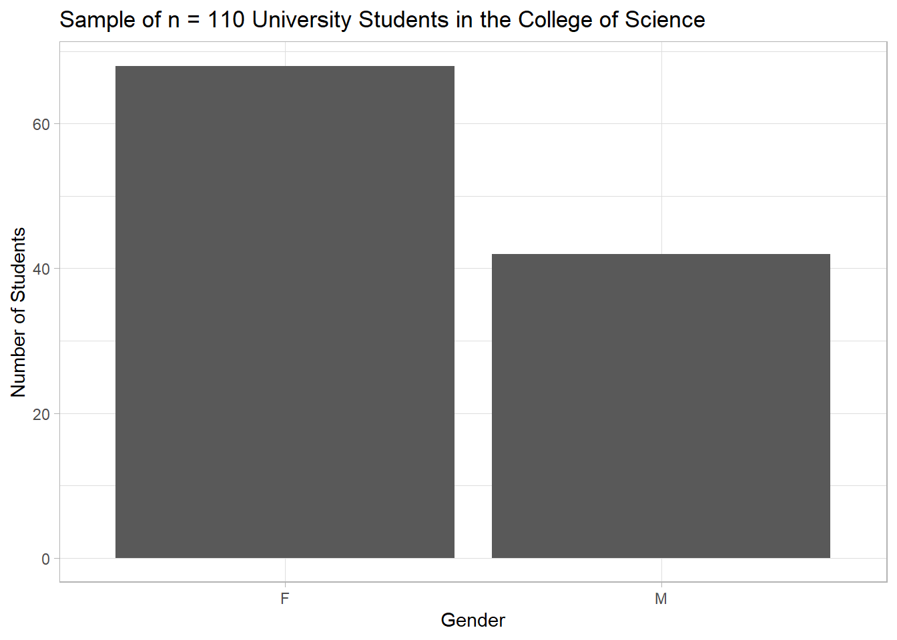
gf_props(~year, data = study_hours,
xlab = "Class Rank",
ylab = "Proportion of Students",
title = "Sample of n = 110 University Students in the College of Science")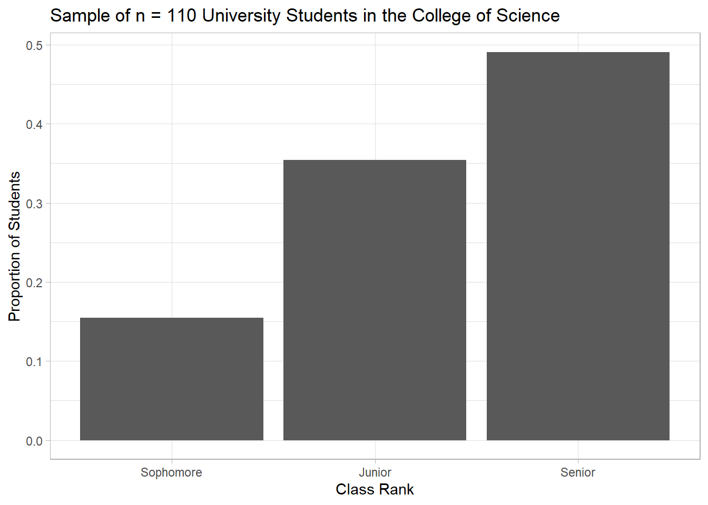
Always be sure to provide labels for each axis (xlab, ylab) and an informative title for each graph that includes:
- Variable Names and Units, if appropriate
- Summary measures displayed on the graph
- Information about the sample or population, including size
2.3 Conditional Proportions
A contingency table is a simple way of looking at the relationship between two categorical variables.
tally(gender ~ year, data = study_hours) year
gender Sophomore Junior Senior
F 11 28 29
M 6 11 25A conditional proportion is the proportion calculated over a specific subgroup - it is the empirical analog to a conditional probability \(P(A | B)\). The formula can take two forms:
y ~ x, which isyconditioned onxor~ y | x, which is alsoyconditioned onx
I prefer the ~ y | x format because it is the same format that will be needed for an analogous barplot of the conditional outcomes.
tally(~ gender | year, data = study_hours, format = "prop") year
gender Sophomore Junior Senior
F 0.6470588 0.7179487 0.5370370
M 0.3529412 0.2820513 0.4629630What does the table tell us about the distribution of female-identifying students across the class years in our data?
We can visualize our conditional proportions using the gf_props() function. Notice the new argument fill = ~gender which will fill our bars with a color for each level in gender.
gf_props(~gender | year, data = study_hours,
fill = ~gender, #fills bars with a color based on gender
xlab = "Gender",
ylab = "Proportion of Students",
title = "Sample of n = 110 University Students in the College of Science",
show.legend = FALSE) #hides unnecessary legend 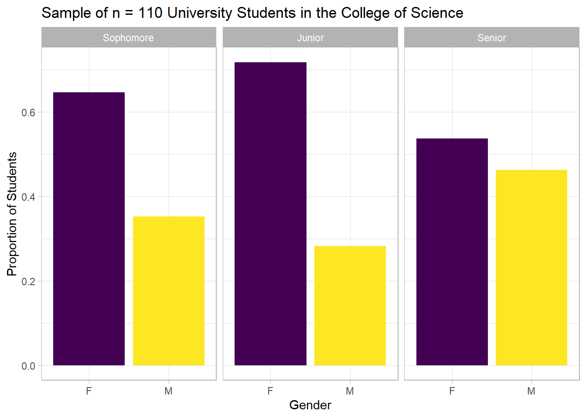
2.4 Case Study I: Titanic
Titanic was a British passenger liner. It sank in the North Atlantic Ocean in the morning of April 15, 1912. The cause was collision with an iceberg, and many passengers lost lives. titanic.csv is a dataset which includes information about 1,316 passengers. There are five columns:
id: passenger identification numberclass: passenger class (first, second, or third)age: passenger’s age group (adult or child)sex: passenger’s sex (female or male)survived: passenger’s survival status (no or yes)
The objective is to investigate if certain groups of passengers had higher chances of survival.
R On Computer: Download Zip File
Our goal is to produce statistics and graphics that help us explore the data on survival, similar to the output below, using R.
| Variable | Level | Did not survive | Survived | Total |
|---|---|---|---|---|
| Sex | Female | 123 (28%) | 324 (72%) | 447 |
| Male | 694 (80%) | 175 (20%) | 869 | |
| Age | Adults | 765 (63%) | 442 (37%) | 1,207 |
| Children | 52 (48%) | 57 (52%) | 109 | |
| Passenger Class | First | 122 (38%) | 203 (62%) | 325 |
| Second | 167 (59%) | 118 (41%) | 285 | |
| Third | 528 (75%) | 178 (25%) | 706 | |
| Total | Total | 817 (62%) | 499 (38%) | 1,316 |
3 Numeric Data
Numeric data can be summarized by sample mean and standard deviation as well as 5-number summary. The 5-number summary can be used to draw a boxplot which is a quick visual summary of numeric data. To do that, we first must define outliers.
3.1 Outliers
Let \(X_{(1)}\), \(Q_1\), \(M\), \(Q_3\), and \(X_{(n)}\) be the sample minimum, first quartile, median, third quartile, and maximum, respectively. The inter-quartile range (or IQR) is defined as
\[ \texttt{IQR} = Q_3 - Q_1 \, . \]
The lower fence and upper fence are defined as
\[ \begin{aligned} \texttt{LF} & = Q_1 - 1.5 \times \texttt{IQR} \, , \\ \texttt{UF} & = Q_3 + 1.5 \times \texttt{IQR} \, , \end{aligned} \]
any data values outside of \((\texttt{LF}, \texttt{UF})\) are outliers. (In general, any extremely low or high data values are referred to as outliers, and it is an arbitrary definition of outliers.)
3.2 Boxplot
Once we know the \((\texttt{LF}, \texttt{UF})\) we can use this to draw the boxplot by defining our “whiskers”.
The lower whisker and upper whisker are defined as follows:
Among data values greater than or equal to
LF, letLWbe the closest data value toLF. ThenLWis called the lower whisker.Among data values less than or equal to
UF, letUWbe the closest data value toUF. ThenUWis called the upper whisker.The outliers will then be represented as dots beyond the last value on the whisker.
The “box” is then made up of \(Q_1\), \(M\), and \(Q_3\) values.
R will do these calculations for us within the gf_boxplot() function:
gf_boxplot(~hours_units, data = study_hours,
xlab = "Study Hours Per Week Per Unit",
title = "Study Habits of Sudents in the College of Science (n = 110) at the University") |>
gf_theme(axis.ticks.y = element_blank(), #removes y-axis ticks
axis.text.y = element_blank()) #removes y-axis labels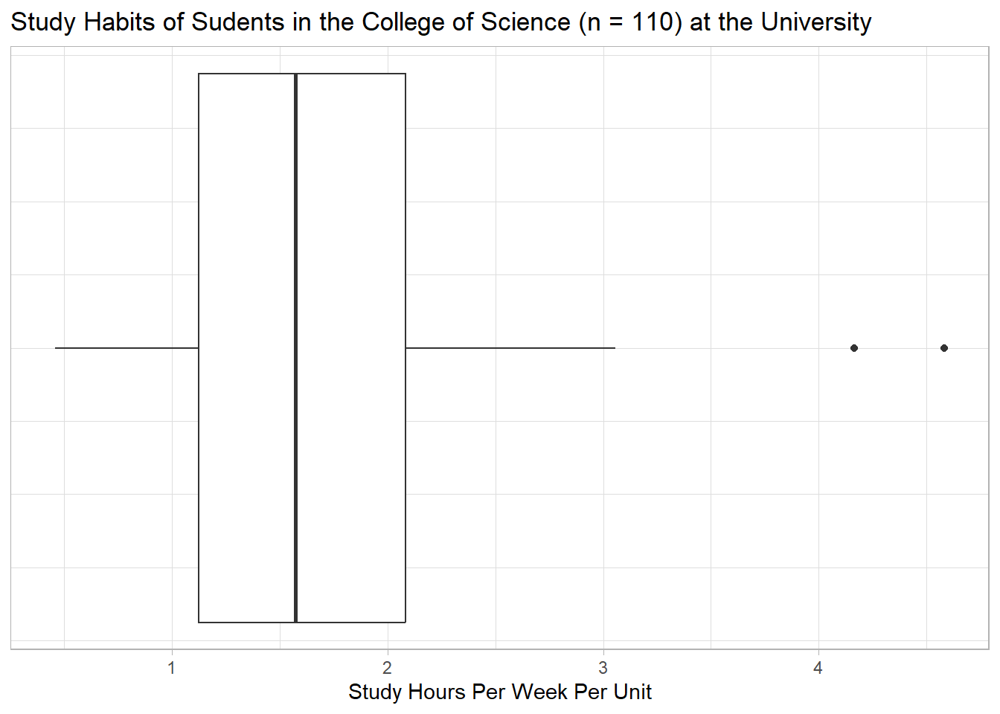
We can also compare side-by-side boxplots horizontally by specifying the categorical variable as the y position and the numeric variable as the y position:
gf_boxplot(gender ~ hours_units, data = study_hours,
xlab = "Study Hours Per Week Per Unit",
ylab = "Gender",
title = "Study Habits of Sudents in the College of Science (n = 110) at the University") 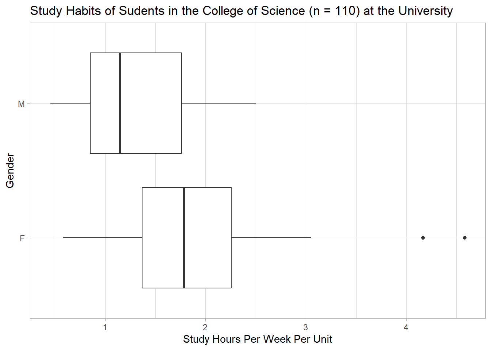
We can also flip it vertically by switching our categorical variable to the x position rather than y position.
gf_boxplot(hours_units ~ year, data = study_hours,
ylab = "Study Hours Per Week Per Unit",
xlab = "Class Year",
title = "Study Habits of Sudents in the College of Science (n = 110) at the University") 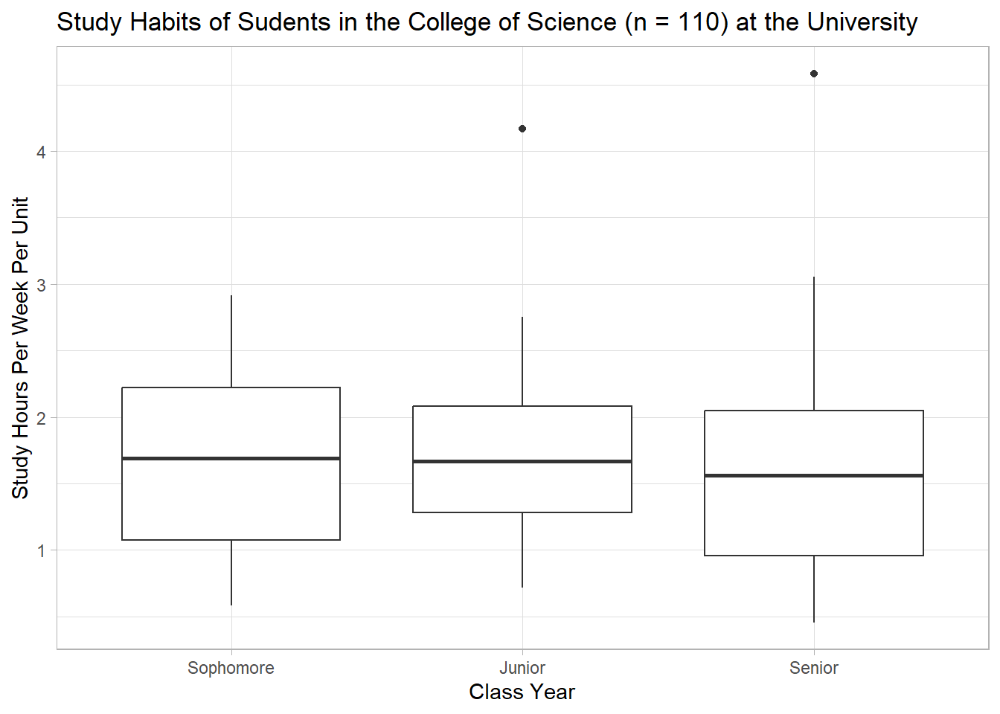
3.2.1 Descriptions of Shape - Skew
In looking at a boxplot we can also evaluate the “skew” of the distribution as one of the following:
Right/Positive Skew
Left/Negative Skew
Symmetric
Let’s compare the summary statistics across gender for hours per week per unit. The function df_stats() gives us the five number summary plus mean/sd.
df_stats(hours_units ~ gender, data = study_hours ) response gender min Q1 median Q3 max mean
1 hours_units F 0.5833333 1.3697917 1.785714 2.256944 4.583333 1.867531
2 hours_units M 0.4565217 0.8520067 1.148352 1.762363 2.500000 1.305361
sd n missing
1 0.7171263 68 0
2 0.5903125 42 0How do you think skew impacts our measures of center?
3.3 Histogram
A histogram is another way of visualizing numeric data. It partitions the range of observed data by creating a bin \(B_i = [b_{i-1}, b_i)\) for \(i = 1, 2, \dots, m\); counts data values belonging to each bin; and uses a graphic like a barplot to visualize the relative frequency of each bin. Below is a histogram of study hours per week per unit with a bin width of 0.25.
gf_histogram(~hours_units, data = study_hours,
xlab = "Study Hours Per Week Per Unit",
binwidth = 0.25,
color = "black") #color outlines the bars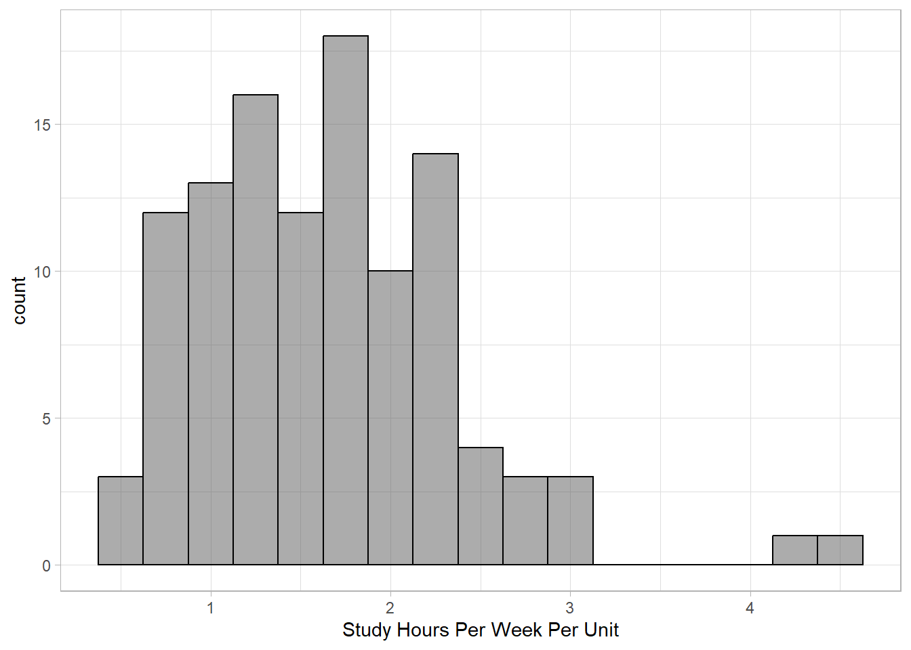
We can adjust the bin width to whatever is reasonable to create a clear visualization - it is balance between too much “granularity” and too little. Here is a bin width of 0.20 - which histogram do you think is better?
gf_histogram(~hours_units, data = study_hours,
xlab = "Study Hours Per Week Per Unit",
binwidth = 0.20,
color = "black") #color outlines the bars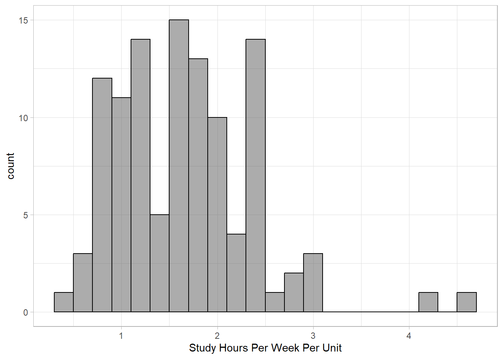
3.3.1 Descriptions of Shape - Modality
Just like the boxplot, we can also describe the skew of the data distribution based on the histogram (and id outliers), but histograms also provide information on another characteristics of shape - modality, or how many peaks a distribution might have.
Draw a unimodal, bimodal, and multimodal with different skews:
3.4 Case Study II: European Soccer
Have European soccer players become faster over the 8 years (from Euro 2016 to 2024)? Of course, soccer players do not generate their maximum speed every minute, but they run at their maximum speed at critical moments. Exercise scientists believe that the maximum speed (km/h) is an indicator of athletes’ physical strength and speed. Our goal will be to reproduce the statistics below as well as create visualizations for comparisons to see how maximum speed has changed over time in the Euro Cups.
| Year | Min. | Q1 | Median | Q3 | Max. | Mean | SD | N |
|---|---|---|---|---|---|---|---|---|
| 2016 | 14.1 | 26.3 | 28.2 | 29.6 | 32.8 | 27.7 | 2.77 | 429 |
| 2020 | 0.0 | 27.2 | 29.2 | 30.8 | 33.8 | 28.5 | 3.76 | 490 |
| 2024 | 20.5 | 30.1 | 31.8 | 33.1 | 36.5 | 31.3 | 2.60 | 493 |
4 Wrap-up
In your groups work on the following problems. You can check your answers below. All calculations (numeric answers) must be rounded to four decimals (e.g., 0.6667 instead of 2/3, 0.5 or 0.5000 instead of 1/2) unless specified. Be ready to show your work on the board.
4.0.1 Problem 1
Fill in the blank.
A categorical variable can be visualized by a [b…].
A numeric variable can be visualized by a [b…] using the 5-number summary.
A numeric variable can be visualized by a [h…] by specifying the bins (intervals) of possible values.
Data values which are outside of lower fence and upper fence called [o…].
In a boxplot, the middle bar inside the box is the sample [m…].
In a boxplot, the left side of the box is the sample [f… q…].
In a boxplot, the right side of the box is the sample [t… q…].
In a boxplot, the left bar and right bar marked outside of the box are the lower [w…] and upper [w…]. (They are the same word, so answer only once.)
4.0.2 Problem 2
Given a sample of \((1, 2, \dots, 100)\) of size 100, calculate the following statistics based on the below descriptive statistics.
x <- data.frame(x = 1:100)
head(x) x
1 1
2 2
3 3
4 4
5 5
6 6df_stats(~x, data = x) response min Q1 median Q3 max mean sd n missing
1 x 1 25.75 50.5 75.25 100 50.5 29.01149 100 0inter-quartile range (\(\texttt{IQR}\))
lower fence (\(\texttt{LF}\))
upper fence (\(\texttt{UF}\))
lower whisker (\(\texttt{LW}\))
upper whisker (\(\texttt{LW}\))
the number of outliers
4.0.3 Problem 3
Given a sample of (1, 10, 100, 1000, 10000), calculate the following statistics based on the below descriptive statistics.
x <- data.frame(x = 10 ^ (0:4))
head(x) x
1 1
2 10
3 100
4 1000
5 10000df_stats(~x, data = x) response min Q1 median Q3 max mean sd n missing
1 x 1 10 100 1000 10000 2222.2 4368.044 5 0inter-quartile range (\(\texttt{IQR}\))
lower fence (\(\texttt{LF}\))
upper fence (\(\texttt{UF}\))
lower whisker (\(\texttt{LW}\))
upper whisker (\(\texttt{LW}\))
the number of outliers
5 Assignment
Check your answer by inputting them below their respective question. All calculations (numeric answers) must be rounded to four decimals (e.g., 0.6667 instead of 2/3, 0.5 or 0.5000 instead of 1/2) unless specified.
Though you are checking the numeric answers here, you should make sure your written work is complete and your mathematical notation is correct as both will be graded on the homework quiz.
5.0.1 Problem 1
This problem is continued from Case Study II (@sec-euro). Below is a summary of the maximum speed by event within each position in ?@tbl-euro2. Fill in the blank by rounding to one decimal place. (You must show your code.)
| Position | Year | Q1 | Median | Q3 | Max | Mean | SD | N |
|---|---|---|---|---|---|---|---|---|
| Defender | 2016 | 26.8 | [a] | 29.8 | 32.1 | 28.1 | 2.4 | 147 |
| 2020 | 28.4 | 29.9 | 31.3 | [b] | 29.5 | 2.6 | 165 | |
| 2024 | 31.0 | 32.2 | 33.5 | 35.7 | [c] | 2.1 | 151 | |
| Midfielder | 2016 | 26.5 | 28.1 | 29.6 | 31.9 | [d] | 2.2 | 164 |
| 2020 | 27.2 | 29.0 | 30.4 | [e] | 28.3 | 4.0 | 193 | |
| 2024 | 30.1 | [f] | 32.8 | 35.8 | 31.2 | 2.2 | 182 | |
| Forward | 2016 | 26.2 | [g] | 29.8 | 32.8 | 27.9 | 2.4 | 94 |
| 2020 | 27.4 | 29.5 | 31.3 | [h] | 29.1 | 3.1 | 106 | |
| 2024 | 30.5 | 32.1 | 33.2 | 36.5 | [i] | 2.3 | 131 |
5.0.2 Problem 2
affairs.csv is a partial dataset of a magazine survey conducted in 1969 by Psychology Today. Readers of the magazine were asked to mail in their answers. About 20,000 replies were received, and a subset of them were recorded as a sample. It contains the following variables. In this problem, the goal of data analysis is to study factors associated with the likelihood of extramarital affairs.
affairs: Did you have extramarital affairs during the past year? (nooryes)gender: Are you a female or a male? (femaleormale)children: Do you have children? (nooryes)religiousness: How religious are you? (anti,not at all,slightly,somewhat, orvery)rating: How happy are you with your marriage? (very unhappy,unhappy,average,above average, orvery happy)
Reference: Fair, R.C. (1978). A Theory of Extramarital Affairs. Journal of Political Economy, 86, 45–61. ?@tbl-affair is a summary of the percent of respondents who had extramarital affairs during the past year. Fill in the blank by rounding to one decimal place. (You must show your code.)
| No affairs (%) | At least one affair (%) | N | ||
|---|---|---|---|---|
| Gender | Female | 77.1 | 22.9 | 315 |
| Male | 72.7 | 27.3 | 286 | |
| Children | No | 84.2 | 15.8 | [a] |
| Yes (1 or more) | 71.4 | 28.6 | [b] | |
| Religiousness | Anti-religious | [c] | [d] | 48 |
| Not at all | 75.0 | 25.0 | 164 | |
| Slightly religious | 66.7 | 33.3 | 129 | |
| Somewhat religious | 82.6 | 17.4 | 190 | |
| Very religious | [e] | [f] | 70 | |
| Marriage rating | Very unhappy | 50.0 | 50.0 | 16 |
| Unhappy | 50.0 | 50.0 | 66 | |
| Average | 71.0 | 29.0 | 93 | |
| Above average | 75.3 | 24.7 | 194 | |
| Very happy | [g] | [h] | 232 | |
| Total | Total | 75.0 | 25.0 | [i] |
5.0.3 Problem 3
Reproduce the following boxplots exactly. (You must show your code.) You can produce each boxplot separately using the filter() function or you can use faceting features of graphs.
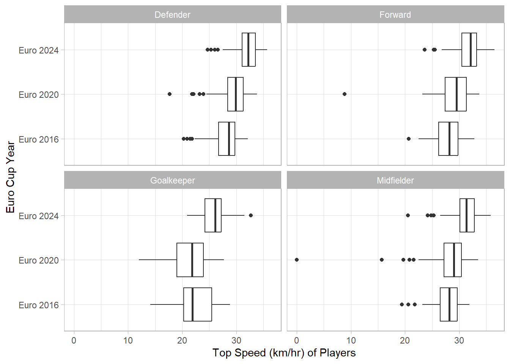
5.0.4 Problem 4
Reproduce the following barplots exactly. (You must show your code.) For the second barplot, note that rating is an ordinal categorical variable. Specify the order of the five levels of rating as follows: very unhappy, unhappy, average, above average, and very happy.
rating
above average average unhappy very happy very unhappy
194 93 66 232 16 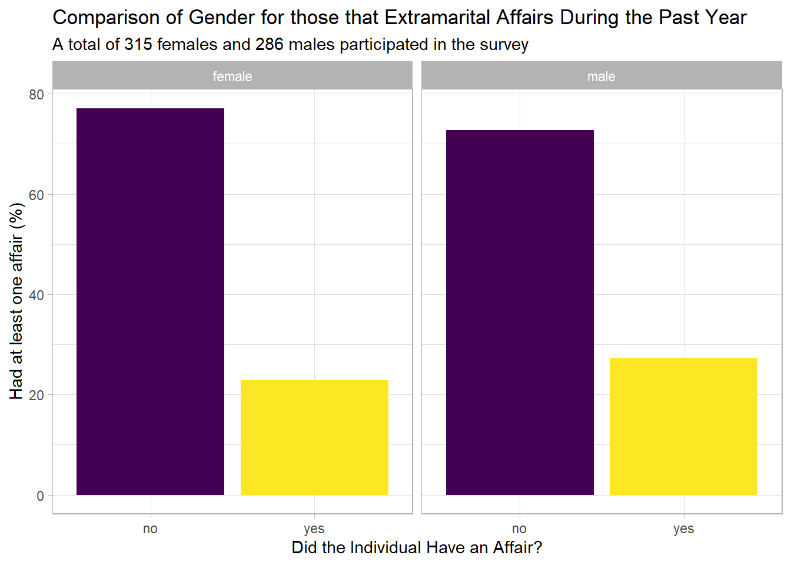
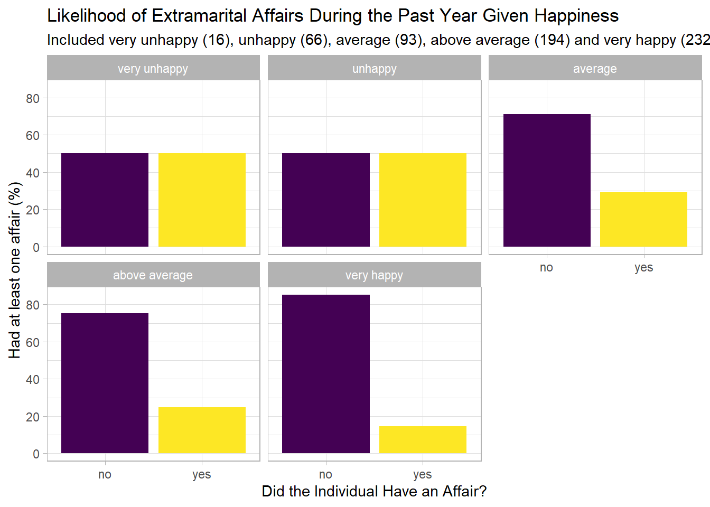